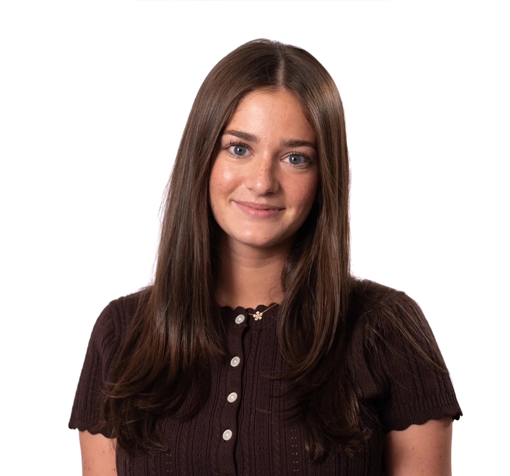
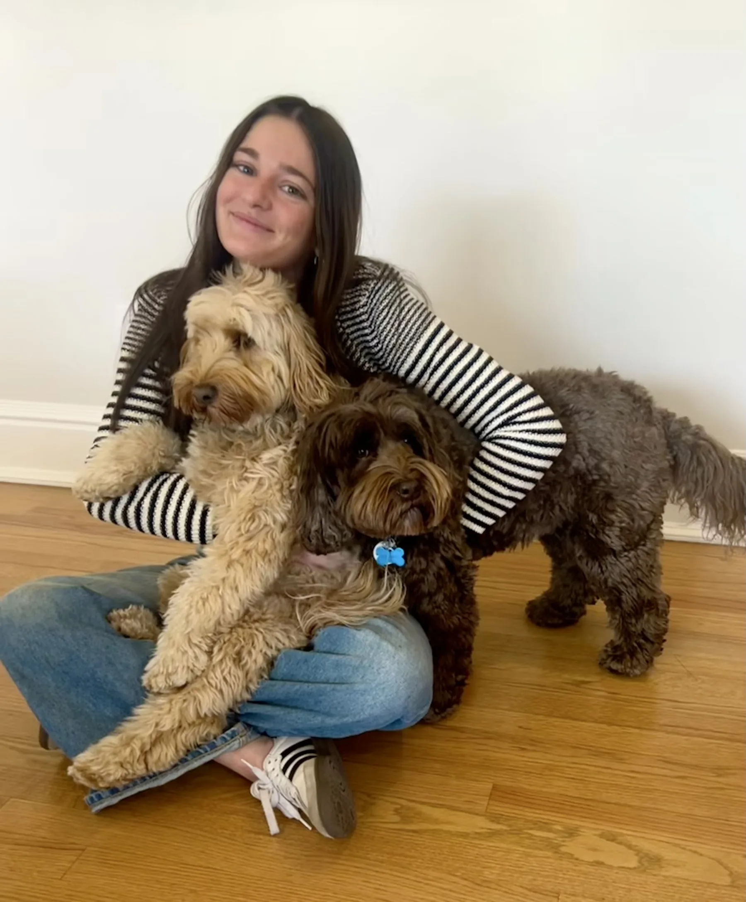
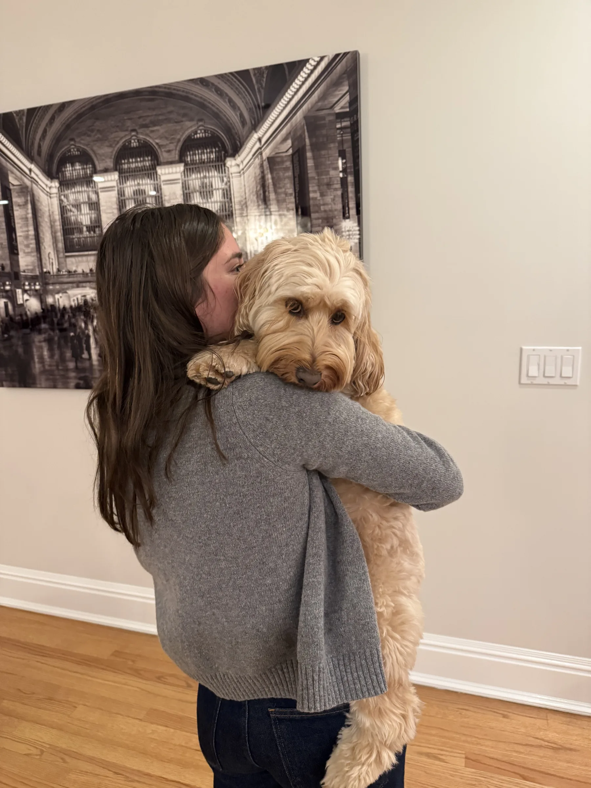
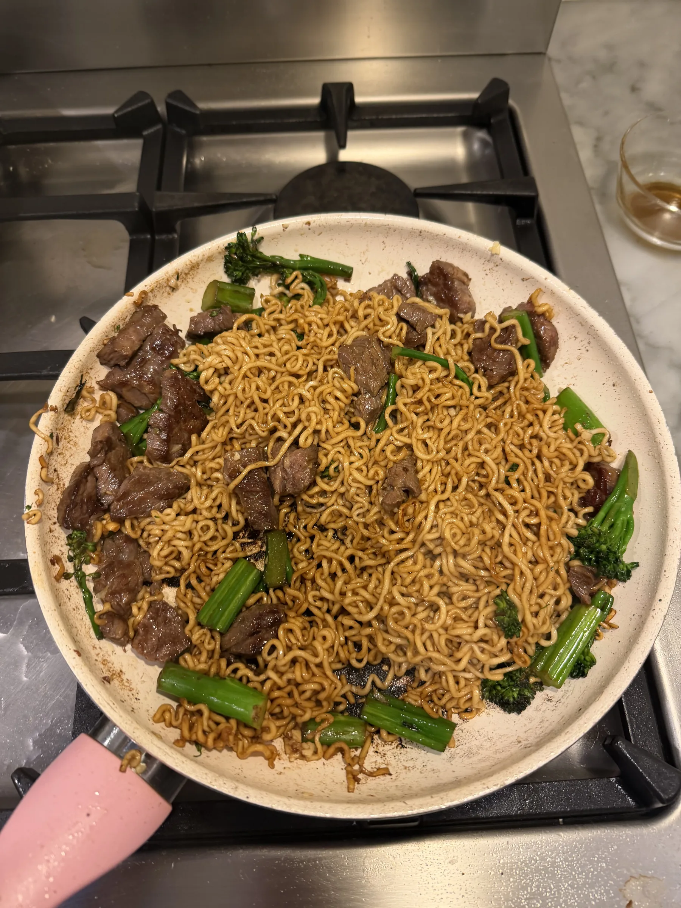

HI!
About meChloe Schlesinger, Art Director.
Strategic communication, creative track
CU Boulder
Hi, I'm Chloe!
You'll probably find me trying a new recipe, watching a movie, or stopping whatever I'm doing to say hi to a dog. My favorite movie is The Shining, which probably says something about me, but I'd rather not look into it too much. I love a good conversation, finding new places to explore, and picking up random hobbies that I get way too invested in. I'm easily entertained, endlessly curious, and always looking for my next obsession.




Contact